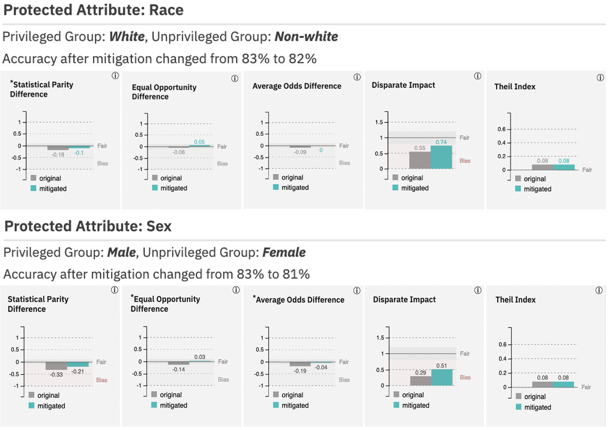
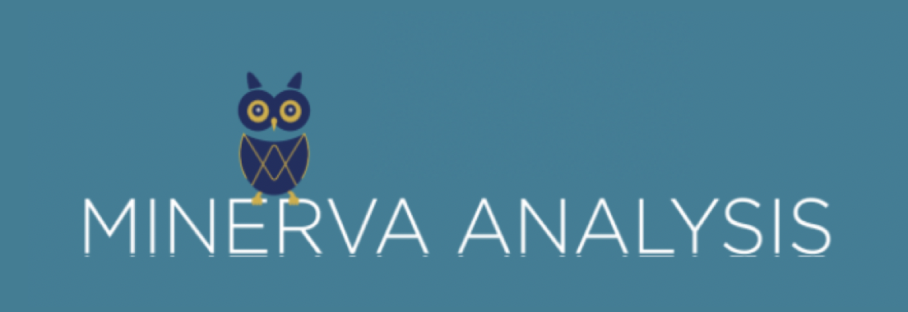
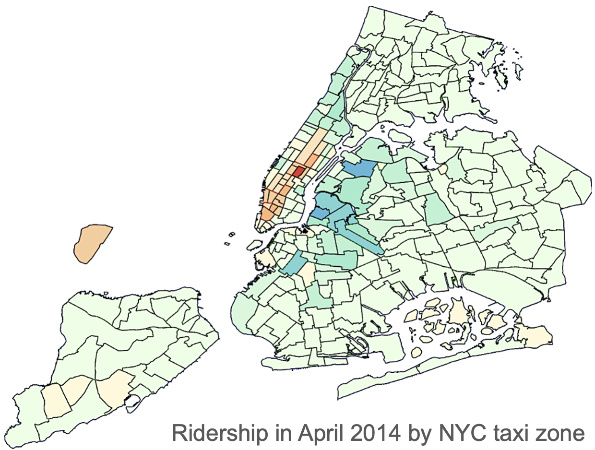
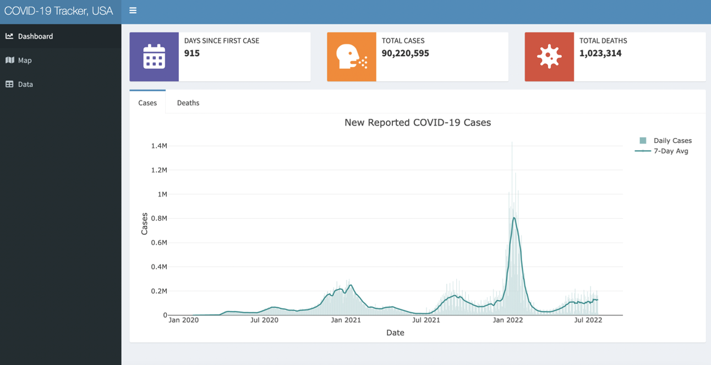
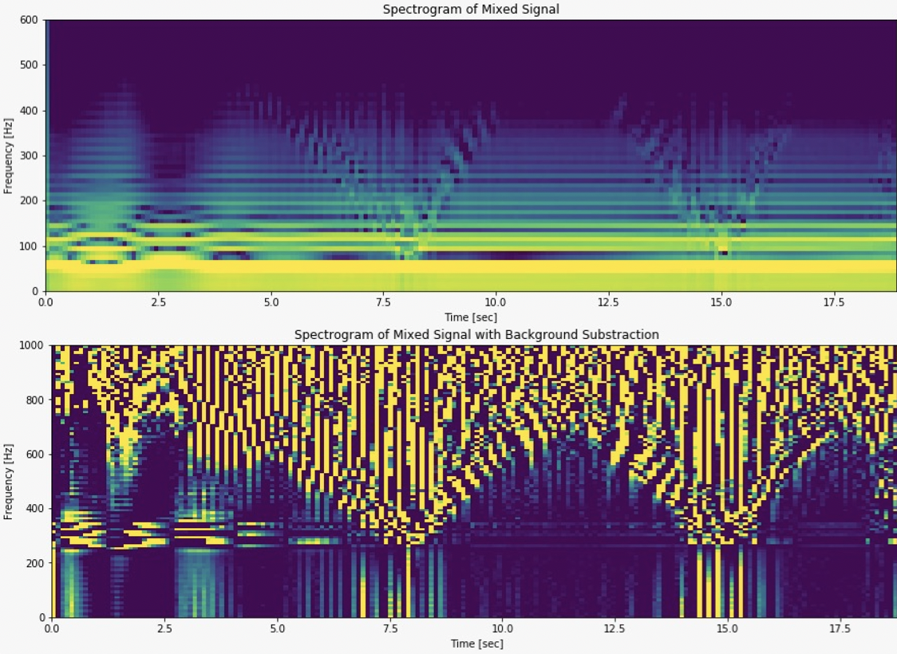
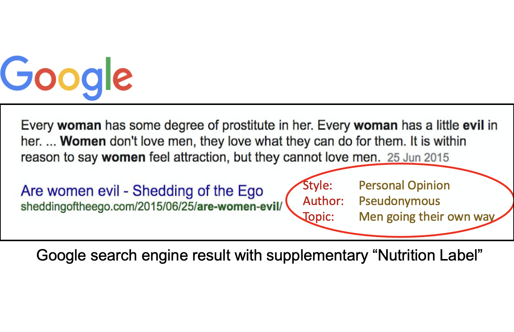
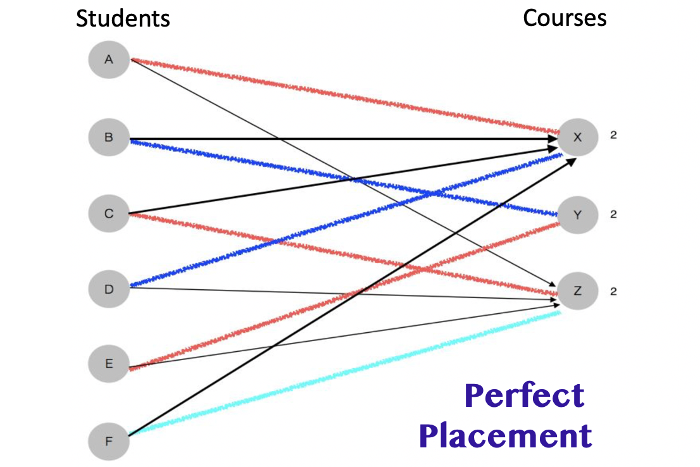
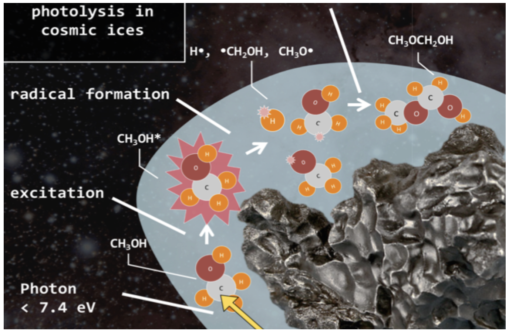

Trustworthy AI, machine learning, R package development
The AI Fairness 360 toolkit is an open-source library to detect and mitigate bias in machine learning models throughout the AI lifecycle.

Machine learning, data analysis, full-stack development
Minerva Analysis equips type I diabetics with tools to regulate their blood glucose levels and improve their health outcomes.
More: Project Website

Data engineering, data analysis, distributed computing
The NYC Mobility Patterns project provides key insights about factors that influence ridership on ridesharing platforms like Uber and Lyft.
More: GitHub code
Data visualization, dashboarding, R Shiny
The COVID-19 Tracker is a dashboard that enables users to visualize the latest trends in COVID-19 cases and deaths across the United States.
More: Dashboard, GitHub code
Machine learning, research, signal processing, mobile development
The Saving Face app alerts users when they touch their faces and provides a low-cost solution to reduce hand-to-face transmission of COVID-19.
Publications: IMWUT '21
Presentations: Harvard NCRC '21,
Ruhlman Conference '21,
UMass Amherst Voices of Data Science '21
More:
Project Website,
GitHub code
Advised by Dr. Camilo Rojas, Fluid Interfaces

Data science, research, web scraping
The search engine “nutrition label” (under development) is a browser extension that helps users distinguish credible from suspect media sources.
Presentations: Ruhlman Conference '19,
Research Poster '19
Press: Wikipedia Edit-a-Thon
Advised by Dr. Eni Mustafaraj, Computer Science

Software development (Java)
The Perfect Placement software for college administrators implements a perfect matching algorithm to optimally place students in their preferred first-year writing course.
More: GitHub code
Research, data analysis
Analysis of mass spectrogram data demonstrates how prebiotic molecules, the building blocks of life, can be formed in interstellar ice clouds.
Publications: Royal Astronomical Society '19
Presentations: Northeast Chemistry Conference Poster '18
Advised by Dr. Chris Arumainayagam, Chemistry
